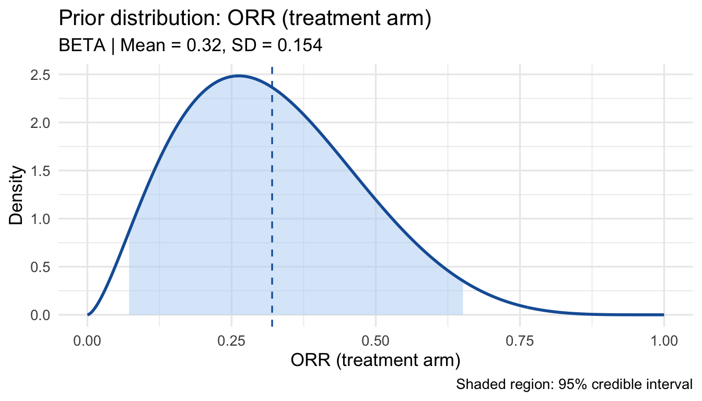
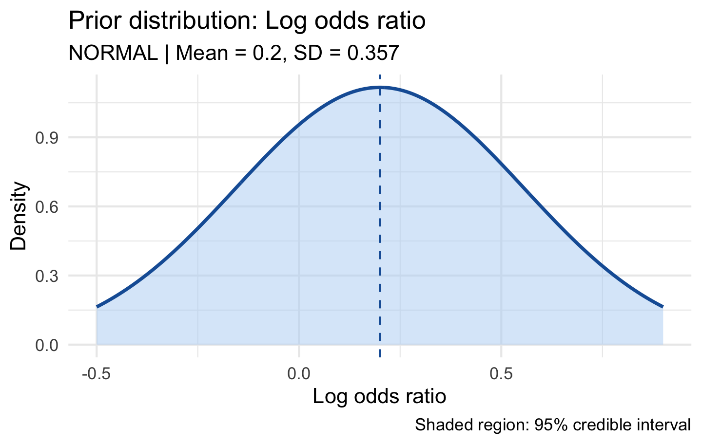
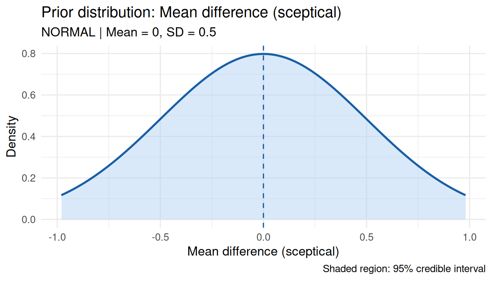
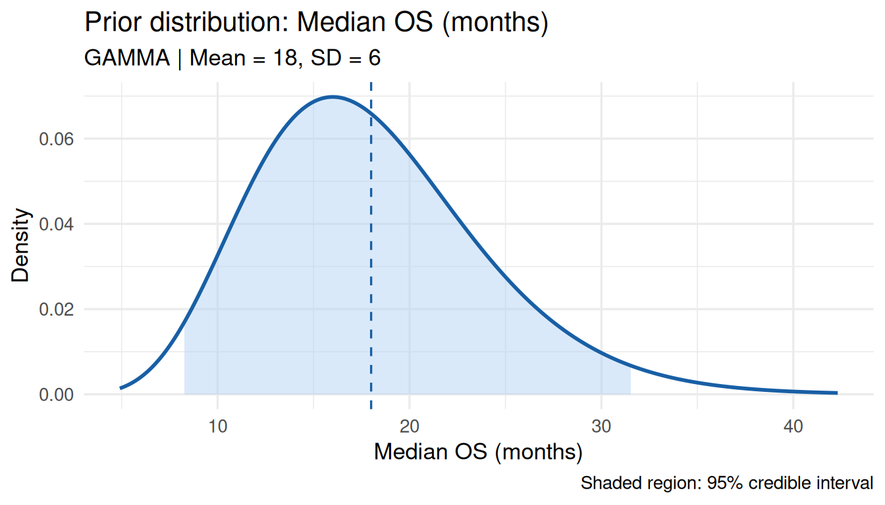
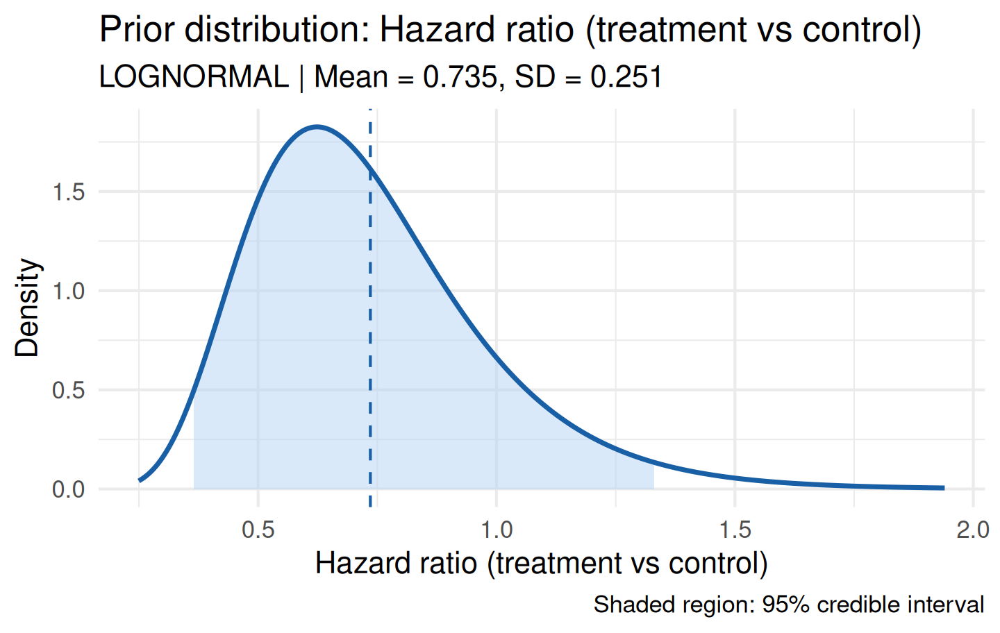
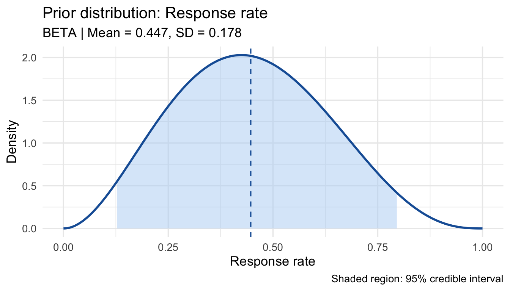
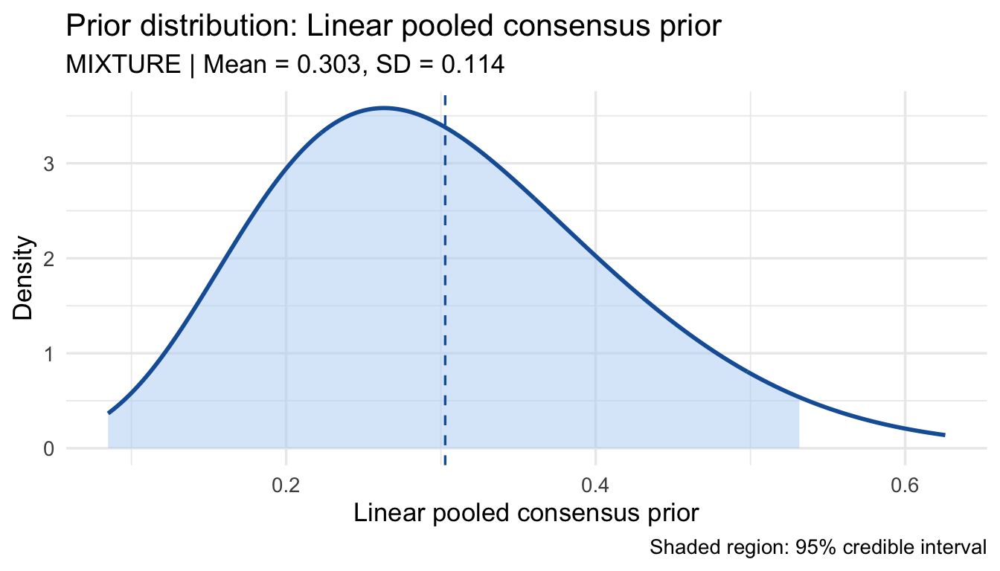
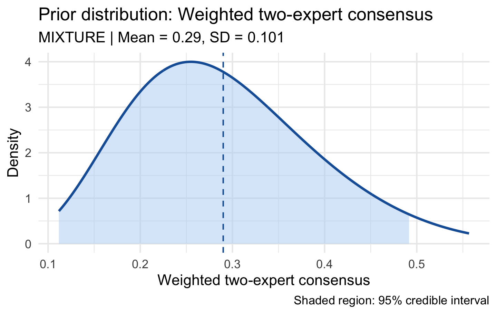

prior_q <- elicit_beta(
quantiles = c("0.05" = 0.10, "0.50" = 0.30, "0.95" = 0.60),
expert_id = "Expert_1",
label = "ORR (treatment arm)"
)
print(prior_q)
plot(prior_q)
Ndoh Penn
May 8, 2026
Prior elicitation is the process of translating an expert’s subjective beliefs about an unknown quantity into a formal probability distribution. bayprior implements the structured elicitation framework recommended in the SHELF methodology (O’Hagan et al., 2006) across four distribution families and three elicitation methods.
| Family | Support | Typical quantity |
|---|---|---|
| Beta | (0, 1) | Response rates, proportions |
| Normal | (−∞, ∞) | Mean differences, log odds ratios |
| Gamma | (0, ∞) | Event rates, median survival |
| Log-Normal | (0, ∞) | Hazard ratios, PK parameters |
The expert specifies three quantiles that anchor the distribution. For example, a clinician who believes the objective response rate (ORR) has a 5% chance of being below 10%, a median of 30%, and a 95% chance of being below 60%:
prior_q <- elicit_beta(
quantiles = c("0.05" = 0.10, "0.50" = 0.30, "0.95" = 0.60),
expert_id = "Expert_1",
label = "ORR (treatment arm)"
)
print(prior_q)
plot(prior_q)
The quantiles argument is a named numeric vector where names are probabilities (as strings) and values are the corresponding quantiles.
When an expert finds it easier to specify a mean and standard deviation than exact quantiles:
Moment matching solves analytically for the Beta parameters from the mean and variance. The SD must be small enough that implied \(\alpha, \beta > 0\):
\[\alpha = \mu \left(\frac{\mu(1-\mu)}{\sigma^2} - 1\right), \quad \beta = (1-\mu)\left(\frac{\mu(1-\mu)}{\sigma^2} - 1\right)\]
For quantities that can take any real value, such as log odds ratios or mean differences:
prior_lor <- elicit_normal(
quantiles = c("0.025" = -0.50, "0.50" = 0.20, "0.975" = 0.90),
label = "Log odds ratio"
)
plot(prior_lor)
prior_md <- elicit_normal(
mean = 0.0,
sd = 0.5,
method = "moments",
label = "Mean difference (sceptical)"
)
plot(prior_md)
The Normal prior is conjugate for continuous outcomes with known variance, making posterior updating straightforward.
For strictly positive quantities such as event rates or median survival times:
prior_os <- elicit_gamma(
mean = 18,
sd = 6,
method = "moments",
label = "Median OS (months)"
)
plot(prior_os)
The Gamma parameterisation uses shape and rate: \[\text{mean} = \frac{\text{shape}}{\text{rate}}, \quad \text{SD} = \frac{\sqrt{\text{shape}}}{\text{rate}}\]
For quantities that are inherently multiplicative and positive, such as hazard ratios or pharmacokinetic parameters. Moment matching operates on the original scale; parameters are stored on the log scale:
prior_hr <- elicit_lognormal(
quantiles = c("0.05" = 0.40, "0.50" = 0.70, "0.95" = 1.20),
label = "Hazard ratio (treatment vs control)"
)
print(prior_hr)
plot(prior_hr)
The relationship between original-scale moments and log-scale parameters: \[\sigma_{\log}^2 = \log\left(1 + \frac{\sigma^2}{\mu^2}\right), \quad \mu_{\log} = \log(\mu) - \frac{\sigma_{\log}^2}{2}\]
The roulette method (Oakley & O’Hagan, 2010) is an interactive chip-allocation technique that makes elicitation accessible to clinical experts who are unfamiliar with probability distributions.
The expert places chips in bins representing plausible values. The chip histogram is then fitted to a parametric family. In the Shiny app, this is interactive; programmatically:
# Expert places chips: 0 very low, rising to peak at 0.25-0.35, falling off.
# Note: chips must not sum such that any cumulative frequency equals exactly
# 0 or 1 — elicit_roulette() strips those boundary bins automatically, but
# at least 2 interior quantile points must remain after stripping.
prior_rou <- elicit_roulette(
chips = c(0L, 1L, 3L, 7L, 9L, 7L, 4L, 2L, 1L, 1L),
breaks = seq(0, 1, by = 0.1),
family = "beta",
label = "Response rate"
)
print(prior_rou)
plot(prior_rou)
The roulette object also stores the raw chip data for provenance:
When multiple experts are elicited, their priors are combined into a single consensus distribution.
Linear pooling produces a weighted mixture — the standard approach in clinical trials (externally Bayesian):
e1 <- elicit_beta(mean = 0.25, sd = 0.08, method = "moments",
expert_id = "Oncologist_1", label = "ORR")
e2 <- elicit_beta(mean = 0.35, sd = 0.10, method = "moments",
expert_id = "Oncologist_2", label = "ORR")
e3 <- elicit_beta(
quantiles = c("0.10" = 0.15, "0.50" = 0.30, "0.90" = 0.52),
expert_id = "Statistician", label = "ORR"
)
consensus <- aggregate_experts(
priors = list(
Oncologist_1 = e1,
Oncologist_2 = e2,
Statistician = e3
),
weights = c(0.40, 0.35, 0.25),
method = "linear"
)
print(consensus)
plot(consensus)
The Bhattacharyya coefficient matrix quantifies pairwise agreement:
Values close to 1 indicate high agreement; values below 0.5 flag substantial disagreement and should trigger re-elicitation discussion.
Produces a sharper consensus when experts agree, but can be severely influenced by outlying opinions:
For full control over component distributions:
mix <- elicit_mixture(
components = list(e1, e2),
weights = c(0.6, 0.4),
label = "Weighted two-expert consensus"
)
plot(mix)
Every elicited prior is a bayprior S3 object with a consistent structure:
str(e1, max.level = 2)
#> List of 7
#> $ dist : chr "beta"
#> $ params :List of 2
#> ..$ alpha: num 7.07
#> ..$ beta : num 21.2
#> $ method : chr "moments"
#> $ expert_id : chr "Oncologist_1"
#> $ label : chr "ORR"
#> $ input :List of 2
#> ..$ mean: num 0.25
#> ..$ sd : num 0.08
#> $ fit_summary:List of 5
#> ..$ mean: num 0.25
#> ..$ sd : num 0.08
#> ..$ q025: num 0.112
#> ..$ q500: num 0.244
#> ..$ q975: num 0.422
#> - attr(*, "class")= chr "bayprior"Key fields:
| Field | Content |
|---|---|
$dist |
Distribution family ("beta", "normal", etc.) |
$params |
Named list of hyperparameters |
$method |
Elicitation method used |
$expert_id |
Expert identifier for provenance |
$label |
Human-readable quantity description |
$fit_summary |
Mean, SD, and 2.5/50/97.5th percentiles |
$input |
Raw elicitation inputs (quantiles or moments) |
O’Hagan, A., Buck, C. E., Daneshkhah, A., Eiser, J. R., Garthwaite, P. H., Jenkinson, D. J., Oakley, J. E., & Rakow, T. (2006). Uncertain Judgements: Eliciting Experts’ Probabilities. Wiley.
Oakley, J. E. & O’Hagan, A. (2010). SHELF: the Sheffield Elicitation Framework. University of Sheffield.